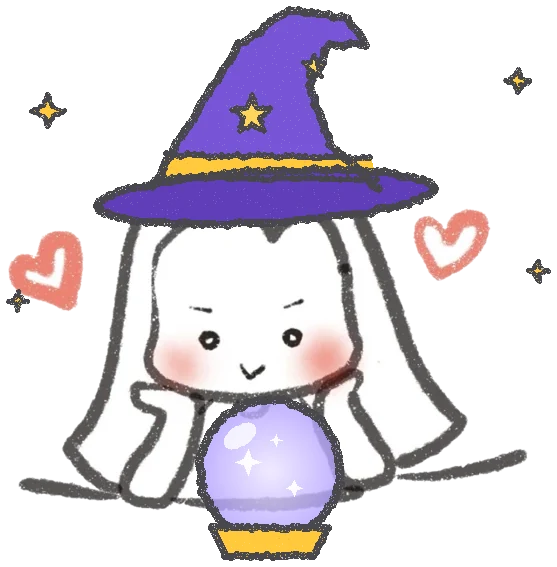

티녀의 별밤 타로
오늘의 타로 점괘
주제를 고르고, 78장 카드 바퀴를 돌려
마음이 가는 한 장을 톡 눌러 보세요

지금 보는 건 총운 · 바퀴를 좌우로 밀어 돌려 보세요
📖 타로 카드 78장, 어떻게 읽을까
타로는 78장의 카드로 지금의 상황을 비춰보는 도구예요. 미래를 정해진 대로 알려주는 예언서라기보다, 뽑은 그림을 놓고 "나는 지금 무엇이 걸리는가"를 들여다보는 이야기 장치에 가깝습니다. 알아볼괘에서는 78장 전체 중 오늘의 카드를 골라 연애·금전·건강운까지 함께 확인할 수 있어요.
메이저 22장, 마이너 56장
타로 한 벌은 성격이 다른 두 묶음으로 나뉘어요.
- 메이저 아르카나 22장 — 바보, 마법사, 연인, 죽음, 태양처럼 이름이 붙은 카드들. 인생의 큰 흐름이나 지금 내게 던져진 주제를 가리킵니다. 이 카드가 나오면 "판이 움직이는 이야기"로 읽어요.
- 마이너 아르카나 56장 — 완드(불·열정), 컵(물·감정), 소드(공기·생각), 펜타클(흙·현실)의 네 수트로 나뉜 카드들. 일상에서 벌어지는 구체적인 사건과 마음의 결을 다룹니다.
타로는 어디서 시작됐을까
타로의 출발은 점술이 아니라 카드놀이였어요. 15세기 이탈리아 궁정에서 즐기던 '타로키'라는 게임용 카드가 원형입니다. 이것이 점을 보는 도구로 쓰이기 시작한 건 18세기 말 프랑스에서였고, 오늘날 우리가 아는 그림체는 1909년 영국에서 나온 라이더-웨이트 덱의 영향이 절대적이에요. 아서 에드워드 웨이트가 구성하고 화가 파멜라 콜먼 스미스가 그린 이 덱은 숫자만 적혀 있던 마이너 카드에까지 전부 장면을 그려 넣어, 누구나 그림만 보고도 이야기를 떠올릴 수 있게 만들었습니다.
카드를 이렇게 읽어보세요
초보자가 가장 흔히 하는 실수는 카드 이름의 인상에 겁먹는 것이에요. '죽음' 카드는 누가 죽는다는 뜻이 아니라 한 단계가 끝나고 다음이 시작된다는 의미로 읽고, '탑' 카드는 재앙이 아니라 억지로 버티던 구조가 무너진다는 신호로 봅니다. 좋은 카드와 나쁜 카드로 나누기보다 "지금 어떤 국면인가"로 읽는 편이 훨씬 유용해요.
질문을 잘 던지는 것도 중요합니다. "그 사람이 날 좋아해?"처럼 예/아니오를 묻기보다 "이 관계에서 내가 놓치고 있는 게 뭘까?"처럼 열린 질문을 하면 카드가 훨씬 말을 많이 해줘요. 그리고 같은 질문을 마음에 드는 답이 나올 때까지 다시 뽑는 건 피하는 게 좋습니다.
자주 묻는 질문
타로는 얼마나 자주 봐도 되나요?
하루 한 번, 오늘의 카드 정도가 적당해요. 같은 고민으로 하루에 몇 번씩 뽑으면 카드에 휘둘리게 되고 해석도 흐려집니다. 상황이 실제로 바뀌었을 때 다시 보는 걸 권해요.
역방향(거꾸로 나온 카드)은 나쁜 건가요?
아니에요. 보통 그 카드의 기운이 약해졌거나, 안으로 향하거나, 아직 때가 아니라는 뜻으로 읽습니다. 역방향을 아예 쓰지 않고 정방향으로만 보는 방식도 널리 쓰여요.
나쁜 카드가 나왔어요. 어떡하죠?
타로는 확정된 미래를 알려주는 게 아니라 지금의 흐름을 비춰주는 도구예요. 불편한 카드가 나왔다면 그건 피하라는 경고라기보다 준비할 거리를 알려주는 힌트로 받아들이시면 됩니다. 재미로 즐기시고, 중요한 결정은 현실의 정보로 판단하세요.
⚠️ 타로 카드는 78장(메이저 아르카나 22장 + 마이너 아르카나 56장) 중 무작위로 뽑히며, 같은 날 같은 주제로 다시 방문하면 같은 카드가 나와요(날짜가 바뀌면 새 카드로 자동 갱신). 이 콘텐츠는 재미로 즐기는 운세이며 중요한 의사결정의 근거로 사용하지 마세요.